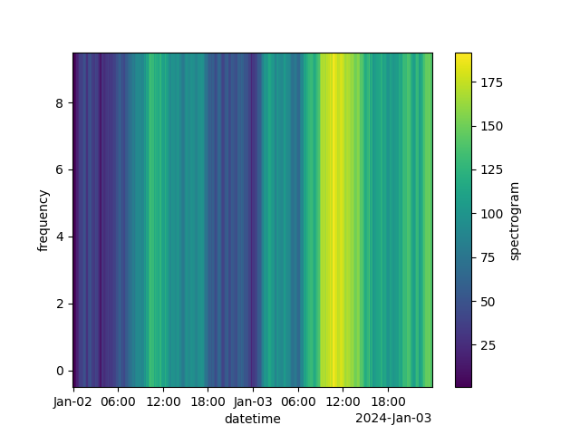
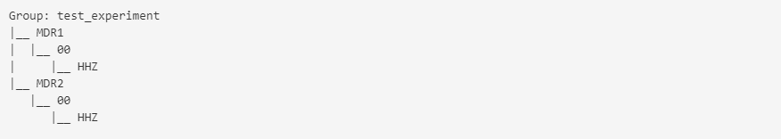
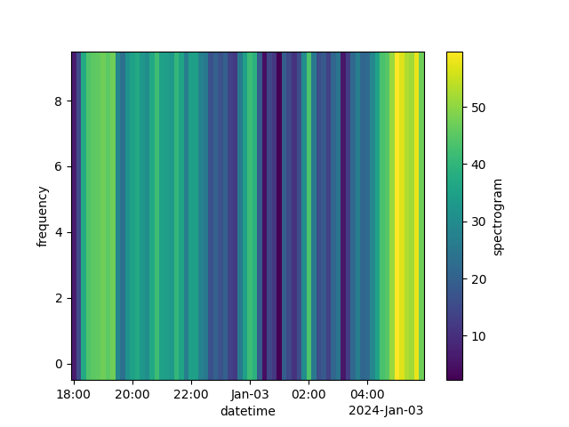

Examples on how to store and retrieve data using StorageGroup
from datetime import datetime
import os
import numpy as np
import pandas as pd
import xarray as xr
from tonik import StorageGroup
A locker room consists of many lockers. Each locker stores data for a single sensor and the locker room groups sensors by, for example, experiment or geographic location. We will start by generating fake spectrogram data.
dates = pd.date_range("2024-01-02", freq='10min', periods=288)
data = np.abs(np.cumsum(np.random.normal(0, 8., len(dates))))
data = np.tile(data, (10, 1))
freqs = np.arange(10)
xrd = xr.Dataset({'spectrogram': xr.DataArray(data, coords=[freqs, dates],
dims=['frequency', 'datetime'])})
xrd['spectrogram'].plot()

Now we will store the data under two different sites of the same experiment.
g = StorageGroup('test_experiment', rootdir='/tmp')
st1 = g.get_store(site='MDR1', sensor='00', channel='HHZ')
st2 = g.get_store(site='MDR2', sensor='00', channel='HHZ')
st1.save(xrd)
st2.save(xrd)
g

Next we want to retrieve the data we just saved. Before retrieving data we have to set the timespan over which we want to retrieve data.
g.starttime = datetime(2024, 1, 2, 18, 0, 0)
g.endtime = datetime(2024, 1, 3, 6, 0, 0)
st = g.get_store('MDR2', '00', 'HHZ')
st('spectrogram').plot()

Tonik comes with an API to access the stored data from other applications. To test the API, first start it in a terminal:
tonik_api --rootdir /tmp
Now you can access the same feature through the API:
url = "http://localhost:8003/feature?"
url += f"group={g.name}&site=MDR2&sensor=00&channel=HHZ&name=spectrogram"
url += f"&starttime={g.starttime.isoformat()}&endtime={g.endtime.isoformat()}"
spec = pd.read_csv(url, parse_dates=True, index_col=[0, 1], date_format='ISO8601').to_xarray()
spec.transpose('freqs', 'dates')['feature'].plot()